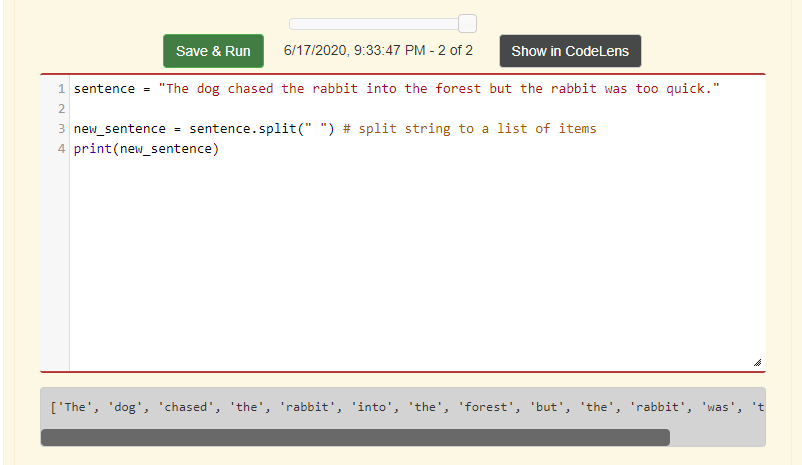

Chapter 11: Dictionaries
What are dictionaries?
A dictionary is a disorganized collection of data values, that is mapped out by using keys and values. Keys are items that help the programmer or user find the value of the key. So for example, when reading a book about Artificial Intelligence, but are looking for the keyword "autonomic computing", so you look in the back of the book, where it has the keyword, and next to it the page number(value) to find it.
- One thing to remember is that keys have to be immutable data types, such as strings, numbers and tuples. And values can be any data type.
How to delete a key-value pair?
In order to delete a key-value pair, the programmer needs to use the "del" statement after the dictionary is initialized. Then the programmer needs to type the del statement, next to it the variable name of the dictionary and the key.

How to find the length of a dictionary?
In order to find how many key-value pairs in a dictionary, the programmer needs to use the "len" method. So, first comes the length method and then the name of the dictionary.
How to update a value in a key-value pair?
To update a value in a key-value pair, the programmer needs to type the name of the dictionary, then square brackets. Inside the brackets the name of the key that the programmer wants to update or change, and outside the brackets an equal sign and then the new value.
How to use the keys method?
The keys method is used to return the keys in the dictionary. So, if the programmer wants to output all the keys in the dictionary, they can type a for loop with the name of the dictionary, the keys method, and parentheses next to it. Or they type the name of the dictionary, then the key method and parentheses, inside the print function. In addition, the programmer can print the key values in a list form, instead of a string.
How to use the values method?
Using the values method is very similar to using the keys method, in that the programmer can use the print function and can print the values into a list format. The main difference is that the output will be the values of the dictionary.
How to use the items method?
Using the items method is the same as using the values method. The difference is that the output is the key-value pair, so it prints both items of the dictionary.
How to use the get method?
Using the get method is like using the values and items method, in that the print function can be used to output values of the dictionary. The difference is that the get method can output the value of the key-value pair. Or the programmer can get the value of a key, and if the key is not in the dictionary, they can get an alternate key value.
How to use the copy method on dictionaries?
Using the copy method is an alternate way of aliasing, where the value of a variable is assigned to another variable. The main difference is that the copy method doesn't return a Boolean variable. Instead it outputs the value of the original variable that was assigned to another variable.
The way to use the copy method is by first creating the name of the variable that will be assigned to the original dictionary's value. Afterwards comes the equal sign, then the name of the dictionary, and next to it the copy method, with the paratheses.
How to find how many times a word occurs in a string?
If there is a string that needs to be converted into a dictionary, the first thing to do is to split it and make it into a list.
Next create a variable with an empty dictionary. This variable will be used to convert the items in the list into key-value pairs that will be assigned to the empty dictionary. After that, the programmer needs to iterate through all the items in the list, and then use the "if" statement and "not in" operator. Why is this statement and operator needed in this situation? Well, because it is a conditional, and it tells Python that if the items in the list are not in the dictionary, to put all the items into the dictionary, convert them into keys and assign each key to a value.
Lastly, in order to find out how many times a word occurs in a string, the programmer needs to use the accumulator pattern after the for loop, to add up all the occurences of each word.